Dell R610 8cpu 16G radis10 300G
PHP Version 5.4.40 ,mysql 5.6 ,nginx 1.7.7.1 ,apc 3.1.13 ,memcache 2.2.7
goods 10000 member 4000 order 28800
600s
order 1% ,index 59% ,item 20% ,shopeindex 10% ,search 10%
``` 1：配置好php环境 2：安装php扩展apc 3：修改bbc的源码使其跳过验证码 /data/www/b2b2c/app/base/lib/vcode.php 查找app/base/lib/下vcode.php 修改59行，return false修改为true 4:修改bbc源码 /data/www/b2b2c/app/topc/controller/trade.php 注视43到48行。即以下代码 $md5CartInfo = md5(serialize(utils::array_ksort_recursive($cartInfo, SORT_STRING))); if( $postData['md5_cart_info'] != $md5CartInfo ) { $msg = app::get('topc')->_("购物车数据发生变化，请刷新后确认提交"); return $this->splash('false', '', $msg, true); }
5：修改bbc源码 /data/www/b2b2c/app/systrade/lib/data/trade/create.php 注释 57行 。即以下代码 $delCartResult = app::get('systrade')->rpcCall('trade.cart.delete', array('cart_id'=>$cartIds,'mode'=>$sdf['mode'],'user_id'=>$sdf['user_id']), 'buyer');
添加：$delCartResult = true;
6:把config下面的catch.php，log.php app.php 都cope到config下面的production目录下面。修改catch.php 把enabled 的值改成true。修改app.php 把debug 的值改成false 。修改log.php把record_level 的值改成info
7:修改：/b2b2c/app/systrade/lib/data/trade/create.php
94行： $tid = date('ymdHim').rand(0,9999);
157行：$oid = date('ymdHim').rand(0,9999);
8：分4个阶段压测 找到基准点
阶段 持续时间 每秒增加用户数
一： 600s 30/s
二： 600s 40/s
三： 600s 50/s
四： 600s 55/s
9：找到基准点为 600s 50/s 进行基准压力测试 完成.
```
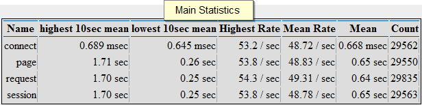 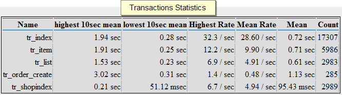 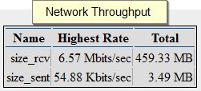 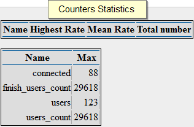 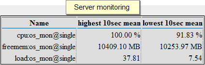 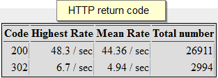
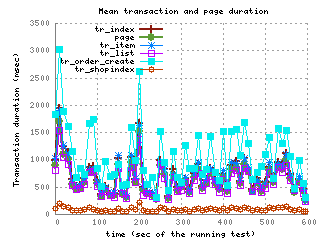
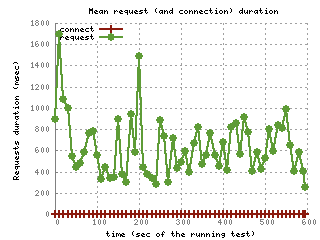
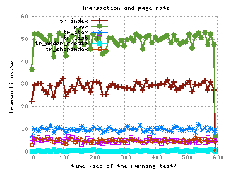
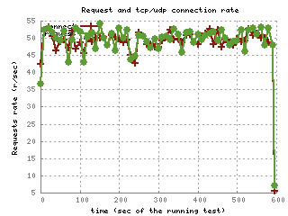
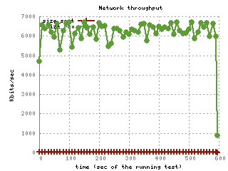
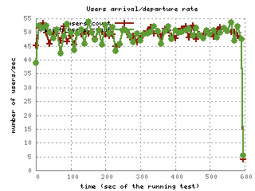
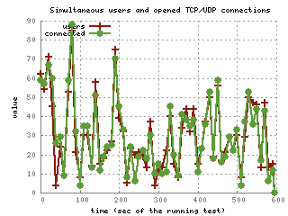
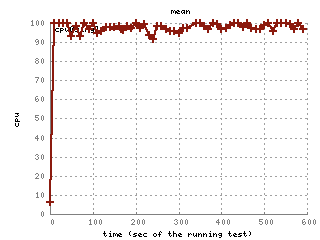
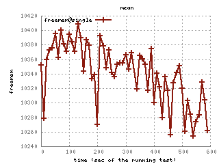
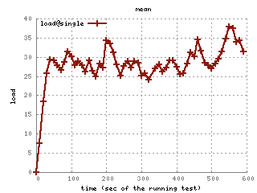